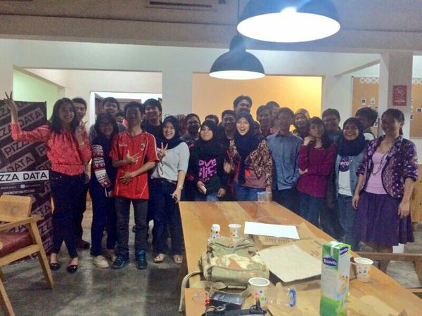

Geek Studio jalan-jalan ke Pizza Data Community Bandung
Wuih kemarin geek studio ikut diskusi bareng ke Pizza Data Community Bandung, di Co&Co, Jl. Dipatiukur, Bandung.
Tema Pizza data community kali ini adalah pendidikan. Diundang juga perwakilan dari pemerintah (sepertinya dinas pendidikan), namanya Kang Chandra dari dinas pendidikan Kota Bandung.
Nah kang Chandra yang lagi berdiri di depan. Menjelaskan tentang PPDB Kota Bandung http://ppdb.bandung.go.id/ yang bermasalah kemarin dan berbagai kebijakan pemerintah.
Nah ada yang lucu sih, waktu kita dari geek studio menanyakan soal penerapan kebijakan pemerintah kota bandung mengenai "kebijakan memilih sekolah berbasis wilayah merupakan upaya kontribusi bidang pendidikan untuk mendukung tata kota"
yang katanya harapannya mengurangi kemacetan dan menghilangkan citra sekolah favourit. Namun pada kenyataannya di USA di amiriki sanah, sistem tersebut sepertinya sudah diterapkan, dan didokumentasikan dalam film "Waiting for Superman", bisa dilihat ulasan mengenai film ini di blog Hendri https://situkangsayur.wordpress.com/2014/08/17/waiting-for-superman-film-dokumenter-pendidikan-di-negara-paman-sam/
Nah, ternyata di negeri amerika itu tetap muncul permasalahan yang tidak jauh berbeda dengan di bandung, apa itu? kualitas setiap sekolah tidak sama dan terjadi ketimpangan, dan menyedihkan, seleksi siswa yang masuk ke sekolah itu menggunakan lotre, tp itu cukup adil sepertinya, jadi semua memiliki kesempatan yang sama hahaha , selanjutnya bisa dibaca di blog diatas.
Nah disini anak2 geek studio dengan temen-temen lainnya di pizza data sama-sama diskusi mengenai solusi yang bisa dibangun dengan memanfaatkan data yang ada atau membuat sistem pengambilan data yang lebih baik untuk menyelesaikan berbagai masalah pendidikan di Kota Bandung.
 tim hura-hura mia, syalza, dan zhena
tim hura-hura mia, syalza, dan zhena

Video waktu trio kwek kwek geek studio bisa diliat di :
Nah ini dia peserta yang ada di geek studio kemarin hehehe

hoorraaayyy...